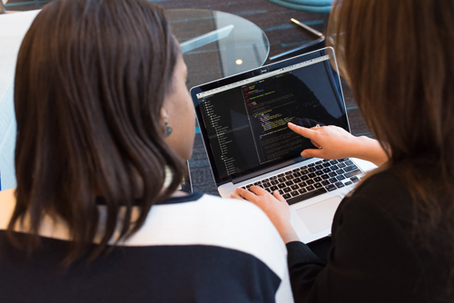

DevopsDevOps, combines development and operations teams. This combination of philosophies,
practices and tools increases an organization’s ability to deliver applications and services at a high speed.
AngularAngular is a platform that makes it easy to build applications
with the web. Angular combines declarative templates, dependency injection, end to end tooling,
and integrated best practices to solve development challenges.
RESTThe Representational State Transfer (REST) is an architectural style that provides
standards between web systems. REST makes communications on the web easier, by exploiting the full
potential of the web by using existing web standards.